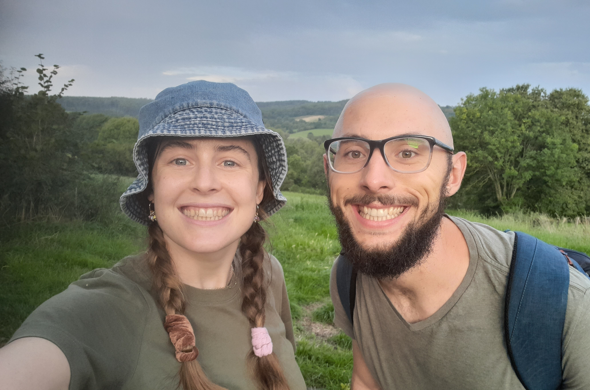

My Story

I was born in England, but moved to the Eastern Cape in South Africa when I was 7. I grew up in East London until I finished school.
In 2016, I moved to Stellenbosch to study engineering and start a new chapter of my life. In 2022 I married Magdaleen and in 2024 we had a daughter. We live on a farm, just outside of Stellenbosch, with a beautiful view of the mountains.
I am a Christian, who believes in the God who created the heavens and the earth.